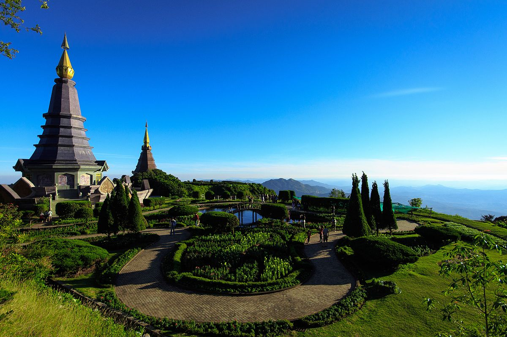

สัมผัสยอดดอยที่สูงที่สุดในประเทศไทย
ดอยอินทนนท์เป็นยอดดอยที่สูงที่สุดของประเทศไทย อากาศเย็นตลอดปี มีธรรมชาติที่อุดมสมบูรณ์และจุดชมวิวที่งดงาม
สถานที่น่าสนใจ
- ยอดดอยอินทนนท์
- พระมหาธาตุนภเมทนีดลและนภพลภูมิสิริ
- น้ำตกวชิรธาร
- เส้นทางศึกษาธรรมชาติกิ่วแม่ปาน